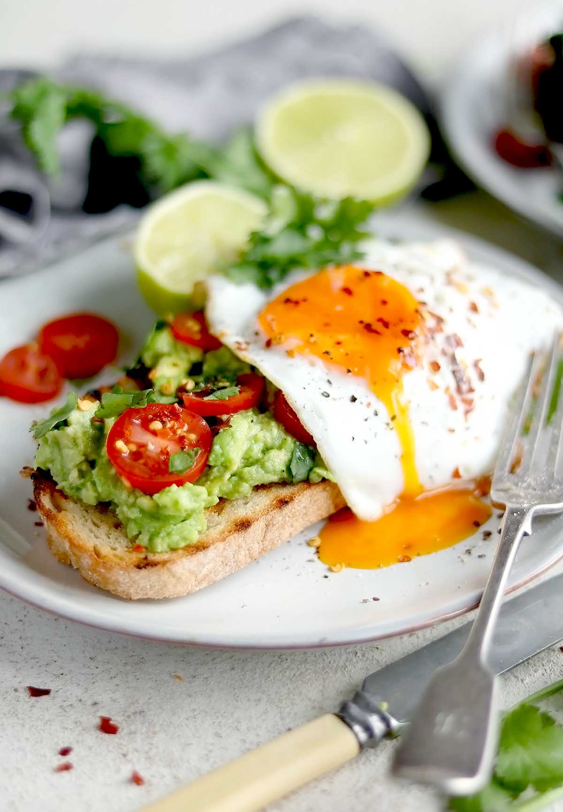

This recipe is my favorite breakfast food to make everyday. It is fairly easy as it only uses a few ingredients and few steps. Few dishes to clean at the end is also a strong positive.

Ingredients
Your choice of sliced bread (I use whole wheat sourdough bread)
1 - 2 egg(s)
1∕2 avocado
slice of cheese (any kind)
butter
baby tomatos
black pepper
salt
(avocado) oil
Process
Heat the frying pan and add about half to one full tablespoon of butter.
Place a slice of bread onto the buttered pan and make sure the bread soaks up the butter.
On an empty side of the pan, add a quarter size of avocado oil.
Crack an egg on the heated oil and add some salt. Don't flip the egg, as this is supposed to be sunny side up.
After a few minutes, flip over the buttered bread to cook the other side.
After the egg and both sides of the toast cooks, place the toast ontop of a plate.
Take the slice of cheese and spread it across the toast.
Then add the egg ontop of the cheese.
Slice the avocado into thin slices and layer them slanted ontop of the egg.
Cut the baby tomatos in half and spread them ontop of the avocado.
To finish off, add some pepper evenly across the top, and you'll get your own homemade sunny side tartine!